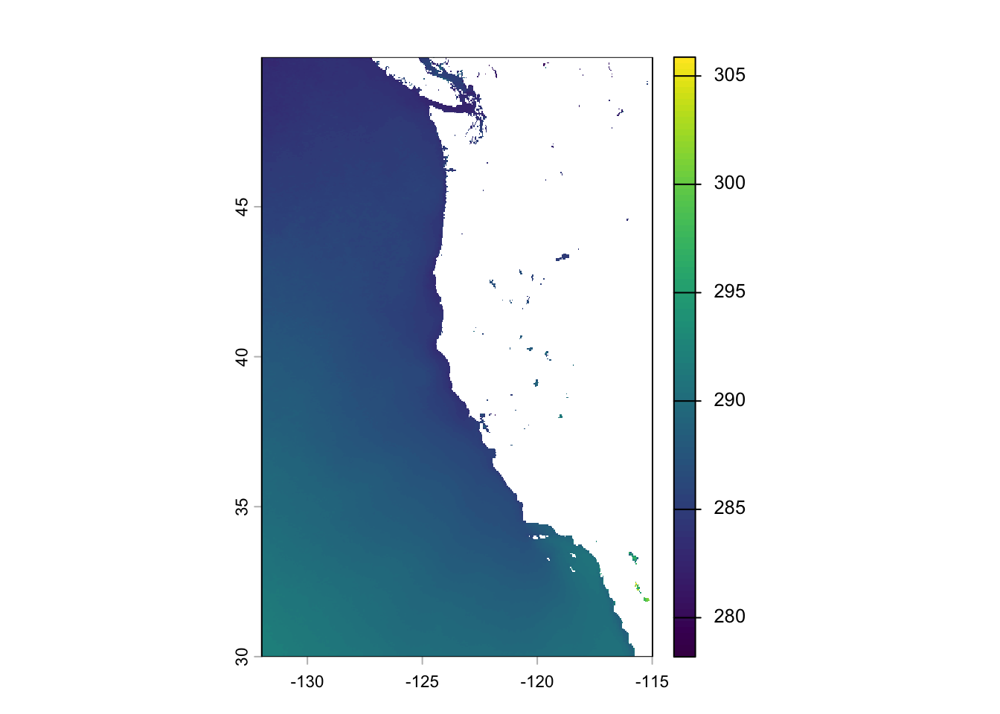
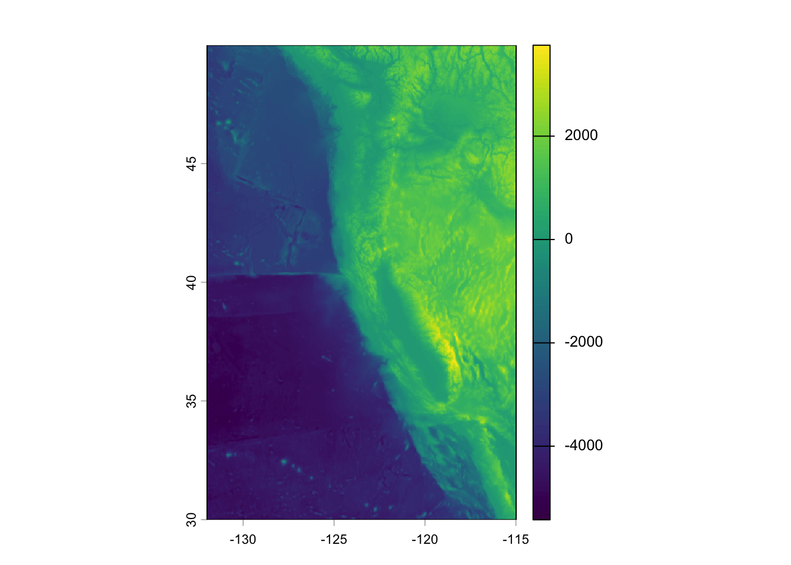
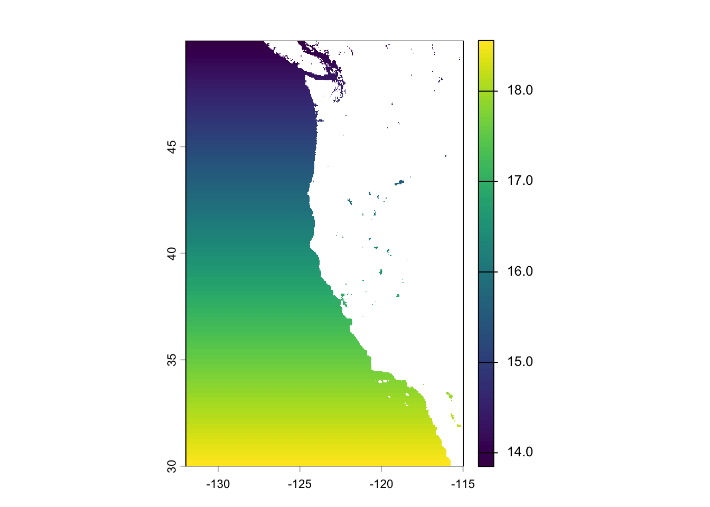
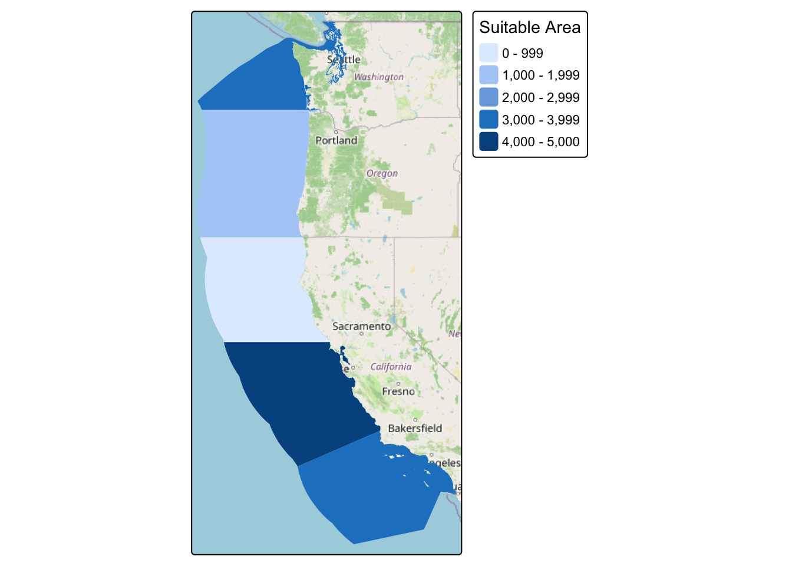
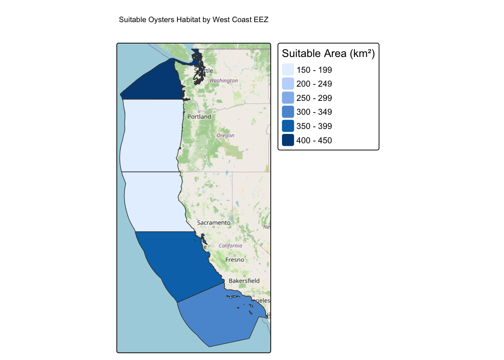
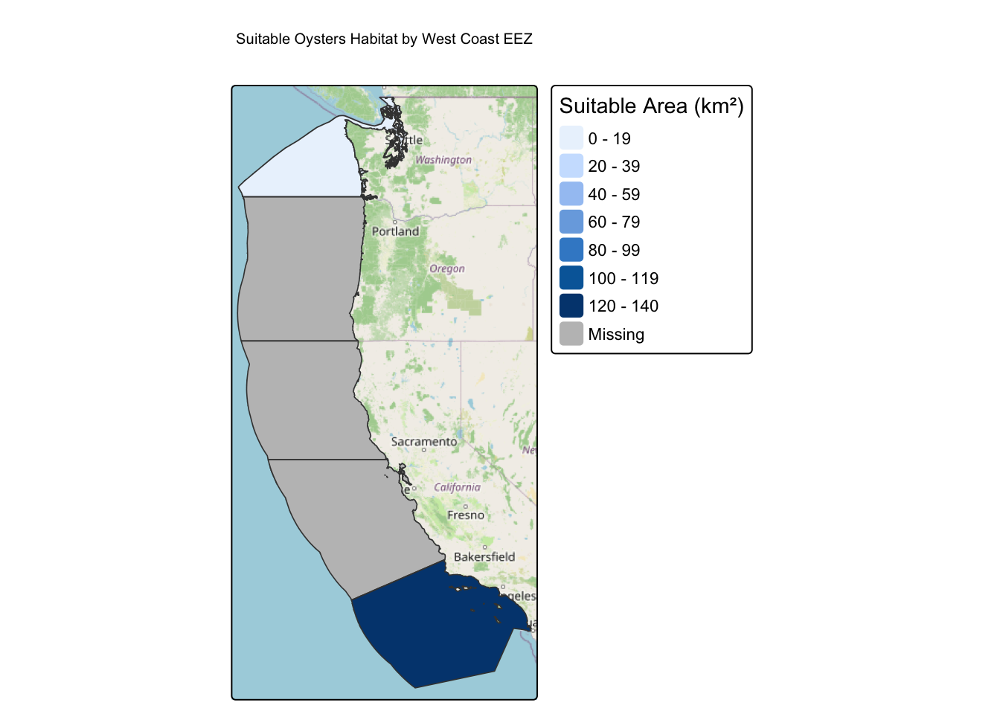

library(sf)
library(spDataLarge)
library(stars)
library(terra)
library(tidyverse)
library(tmap)
library(here)
library(kableExtra)Background
Marine aquaculture has the potential to play an important role in the global food supply as a more suitable protien option than lan-based meat production. Mapping the potential for marine aquaculture globally based on multiple constraints, including ship traffic, dissolved oxygen and bottom depth.
Description
For this assignment, we are tasked with determining which Exclusive Economic Zones (EEZ) on the West Coast of the U.S. are best suited to developing marine aquaculture for several species of oysters and a species of our choice (Lobsters). Suitable locations will be determined based on range of suitable sea surface temperature (SST) and depth values for the species.
To make my workflow generalizeable, Im going to be creating a function that has the following characteristics:
- arguments:
- minimum and maximum sea surface temperature
- minimum and maximum depth
- species name:
- outputs:
- map of EEZ regions colored by amount of suitable area
- species name should be included in the map’s title
# Data Details
Oysters
Research has shown that oysters need the following conditions for optimal growth:
- sea surface temperature : 11-30 C
- depth: 0 - 70 meters below sea level
Labstaas(Lobsters)
- sea surface temperature: 15 - 20 C
- depth: 0 - 480m
Sea Surface Temperature
We are going to be working with was originally generated from [NOOA’s 5km Daily Global Satilite Sea Surface Temperature Anomaly].
Workflow Outline
- The Setup - Prepare the data
- Process the data
- Find Suitable Locations
- Determine the most suitable EEZ
- Reflection
1.The Setup
1b.Prepare the data
Load all necessary data and have a coordinate reference system.
Sea Surface Temperatures
- We will be using annual sea surface temperatures (SST) from the years 2008 to 2012 to characterize the average sea temperatures within the region.
# Average SST across 2008 - 2012
# Reads annual SST raster and combining them into a stack
sst_file <- c(
here("data/average_annual_sst_2008.tif"),
here("data/average_annual_sst_2009.tif"),
here("data/average_annual_sst_2010.tif"),
here("data/average_annual_sst_2011.tif"),
here("data/average_annual_sst_2012.tif")
)
#merge the sst rasters
sst_data <- rast(sst_file)
## Standardize SST CRS to WGS 84
#terra::crs(sst_data) <- "EPSG:4326"Bathymetry
- To characterize the depth of the ocean we will use the General Bathymetric Chart of the Oceans (GEBCO)
#Bathymetry data
#Bathymetry raster
depth_data <- rast("data/depth.tif")Exclusive Economic Zones
- We will be designating maritime boundaries using Exclusive Economic Zones off of the West Coast of U.S. from [“Marineregions.org”]
# reads the West Coast EEZ shapefile
eez_data <- st_read("data/wc_regions_clean.shp")Reading layer `wc_regions_clean' from data source
`/Users/amapolagarcia/Git/Determining-suited-zones-for-marine-aquaculture/data/wc_regions_clean.shp'
using driver `ESRI Shapefile'
Simple feature collection with 5 features and 5 fields
Geometry type: MULTIPOLYGON
Dimension: XY
Bounding box: xmin: -129.1635 ymin: 30.542 xmax: -117.097 ymax: 49.00031
Geodetic CRS: WGS 84Check the Coordinate Reference Systems (CRS)
sst_data <- project(sst_data, crs(depth_data))
eez_data <- st_transform(eez_data, crs(depth_data))- Making sure to check that these datasets have the same crs if not transfrom them to match
#using sst_data as the targeted crs
target_crs <- crs(sst_data)
#transform the depth_data only if its CRS differs
if (!isTRUE(st_crs(depth_data) == st_crs(target_crs))) {
depth_data <- project(depth_data, target_crs)
}
#transform the eez_data only if the CRS differs
if (!isTRUE(st_crs(eez_data) == st_crs(target_crs))) {
eez_data <- st_transform(eez_data, target_crs)
}
# Check crs
crs(eez_data) == crs(depth_data)[1] TRUEcrs(sst_data) == crs(depth_data)[1] TRUE2.Process data
We need to process the SST and depth data so that they can be combined. In this case the SST and depth data have slightly different resolutions, extents, and positions.
-
- note: the resolutions of the SST and depth data do not match
- resample the depth data to match the resolution of the SST data using the bilinear method approach
#Finding the mean() average of SST from 2008
sst_mean <- mean(sst_data, na.rm = TRUE) #na.rm = TRUE used to exlcude missing NA values
#visual to check
plot(sst_mean)
#convert average SST(sst_mean) from Kelvin to Celsius Hint: subtract by 273.15
sst_celsius <- sst_mean - 273.15
#crop - crop() depth to match the extent of SST raster
depth_cropped <- crop(depth_data,sst_celsius)
# resample the depth data and sst match in resolution, extent, and crs
resample_depth <- resample(depth_cropped,sst_celsius,method = "bilinear")#check resolution and renders nicely <3
cat("=== SST ===\n")=== SST ===cat("Resolution:", res(sst_data), "\n")Resolution: 0.04165905 0.04165905 cat("Extent: "); print(ext(sst_data))Extent: SpatExtent : -131.98475232999999, -114.9878608010912, 29.992079988813192, 49.988422964000002 (xmin, xmax, ymin, ymax)cat("\n=== Depth Resample ===\n")
=== Depth Resample ===cat("Resolution:", res(resample_depth), "\n")Resolution: 0.04165905 0.04165905 cat("Extent: "); print(ext(resample_depth))Extent: SpatExtent : -131.98475232999999, -114.9878608010912, 29.992079988813192, 49.988422964000002 (xmin, xmax, ymin, ymax)cat("\n=== Same CRS? ===\n")
=== Same CRS? ===cat("STT vs Depth Resample: ", same.crs(sst_data, depth_cropped), "\n")STT vs Depth Resample: TRUE #visual too see if it works
plot(resample_depth) 
3.Find Suitable Locations
Find suitable locations for marine aquaculture, we will need to find locations that are suitable in terms of both SST and Depth
-
- hint: set suitable values to 1 and unsuitable values to 0
# find suitable area within each EEZ in order to rank zones by priority
#Apply the matrix to reclassify the raster
#hint: set suitable values to 1 and unsuitable values to 0
min_sst <- 11
max_sst <- 30
#sea surface temperature : 11-30 & depth: 0 - 70 meters below sea level
rcl_sst <- matrix(c(
-Inf, min_sst, 0, # Not suitable
min_sst, max_sst, 1, # Suitable
max_sst, Inf, 0 # Not Suitable
),
ncol = 3, byrow = TRUE)
max_depth <- -70
min_depth <- 0
#reclassify depth_data
rcl_depth <- matrix(c(
-Inf, max_depth, 0, # Not Suitable
max_depth, min_depth, 1, #Suitable
min_depth, Inf, 0 # Not suitable
),
ncol = 3,
byrow = TRUE)#reclassify
zone_sst <- classify(sst_celsius, rcl = rcl_sst)
zone_depth <- classify(resample_depth, rcl = rcl_depth)
#combine them the two zones together
depth_sst_zones <- c(zone_sst, zone_depth)find locations that satisfy both SST and depth conditions
#cell is suitable if both conditions are met
suitable_zones <- lapp(depth_sst_zones, fun = function(sst_data, depth_data) sst_data * depth_data)
#lets visualize
#plot(suitable_zones)4.Determine the most suitable EEZ
We want to determine the total suitable area within each EEZ in order to rank zones by priority. To do so, we need to find the total area of suitable locations within each EEZ.
- Making EEZ CRS equal to oyster_suitability CRS
#making eez_data ers equal oyster suitability crs
sf::st_crs(eez_data)<- terra::crs(suitable_zones)- Converting sf object to terra SpatVector
#convert sf object to terra SpatVector
eez_vect <- terra::vect(eez_data)
#plot(eez_vect)-Rasterizing EEZ data
#rastersize the eez_data
eez_raster <- rasterize(eez_data, suitable_zones, field = "rgn_id")
#check it out
#plot(eez_raster)- Calculating area of each cell
#calculate area suitable sites for aquaculture in square kilometers using cellsize()
cell_size<- cellSize(suitable_zones, unit = "km", mask = TRUE)
plot(cell_size)
- Making sure only cells classifies as 1 contribute to area total
#keep cell area only where suitable areas equals 1
suitable_zone_mask <- mask(cell_size,suitable_zones, maskvalues = 0)
#visualize
#plot(suitable_zone_mask)- Selecting suitable raster cells that fall within each EEZ region (use zonal function)
# use zonal function to sum masked result and eez raster
zone <- zonal(suitable_zone_mask,eez_raster, fun = 'sum', na.rm = TRUE)
#visual
#plot(zone)- Join select_suitable_eez with original eez_data
#use tibble()
zone_tibble <- as_tibble(zone)
eez_map <- left_join(eez_data, zone_tibble, by = "rgn_id")Table output of suitable zones for oytsters
eez_map |>
st_drop_geometry() |>
select(rgn_id, area, area_km2) |>
arrange((rgn_id)) |>
mutate(pct_suitable = area / area_km2 * 100) |>
kable(
digits = 1,
col.names = c(
"EEZ Region",
"Suitable Area (km²)",
"Total EEZ Area (km²)",
"Suitable (%)"
),
caption = "Suitable oyster aquaculture area by West Coast EEZ",
booktabs = TRUE
) |>
kable_styling(latex_options = c("striped", "hold_position"))| EEZ Region | Suitable Area (km²) | Total EEZ Area (km²) | Suitable (%) |
|---|---|---|---|
| 1 | 1380.6 | 179994.1 | 0.8 |
| 2 | 340.3 | 164378.8 | 0.2 |
| 3 | 4389.6 | 202738.3 | 2.2 |
| 4 | 3347.8 | 206860.8 | 1.6 |
| 5 | 3062.6 | 66898.3 | 4.6 |
Map of suitable zones for oysters
# Lets visualize it!!
tm_shape(eez_map) +
tm_basemap("OpenStreetMap") +
tm_fill(
fill = "area",
fill.legend = tm_legend(title = "Suitable Area")
)
Create a function
you must create a function that has the following characteristics:
arguments: - minimum and maximum sea surface temperature - minimum and maximum depth - species name
outputs: map of EEZ regions colored by amount of suitable area species name should be included in the map’s title
suitable_areas <- function(min_sst, max_sst,min_depth, max_depth,species_name) {
# Mark cells that meet the species' temperature and depth ranges
rcl_sst <- matrix(c(
-Inf,min_sst, 0, # not suitable
min_sst,max_sst,1, #suitable
max_sst, Inf,0),
ncol = 3, byrow = TRUE)
# Apply the matrix to reclassify the raster, making all cells 0 or 1 or 2
sst_rcl <- terra::classify(sst_celsius, rcl = rcl_sst)
# Define a reclassification matrix for temperature
rcl_depth <- matrix(c(-Inf, min_depth, 0, # not suitable
min_depth, max_depth, 1, # suitable
max_depth, Inf, 0), # not suitable
ncol = 3, byrow = TRUE)
#Apply the matrix to reclassify the raster making all cells 0 or 1 or 2
depth_rcl <- terra::classify(resample_depth, rcl = rcl_depth)
#stacked reclassified rasters for suitable conditions
combined_rcl <- c(sst_rcl, depth_rcl)
# produces new raster by multiplying 0 and 1 to find both suitable sst and dept loc
suitable_zones <- lapp(combined_rcl,fun=function(sst_data,depth_data)sst_data * depth_data)
#rasterize converts vector data into a raster based for sz raster
eez_raster <- rasterize(eez_data, suitable_zones, field = 'rgn_id')
#cellsize to create new raster on the same grid as suitable zones
suitable_cellsize <- cellSize(suitable_zones, unit = "km", mask = TRUE)
#mask() changes where suitable zones can live
suitable_zone_mask <- mask(suitable_cellsize, suitable_zones, maskvalues = 0)
#adds up suitable area within eez region
zone <- zonal(suitable_zone_mask, eez_raster, fun = "sum", na.rm = TRUE)
#creating tibble for zone
zone_tibble <- as_tibble(zone)
# joins suitbale area to eez polygons
eez_map <- left_join(eez_data,zone_tibble, by= 'rgn_id')
#map
tm_shape(eez_map) +
tm_basemap("OpenStreetMap") +
tm_fill(
fill = "area",
fill.legend = tm_legend(title = "Suitable Area (km²)")
) +
tm_borders(lwd = 0.8) +
tm_title(paste("Suitable", species_name, "Habitat by West Coast EEZ"))
}Function outputs for oysters suitable zones
Oysters - sea surface temperature : 11-30 C - depth: 0 - 70 meters below sea level
suitable_areas(
min_sst = 11,
max_sst = 30,
min_depth = 0,
max_depth = 70,
species_name = "Oysters"
)
Labstaas(Lobsters)
- sea surface temperature: 15 - 20 C
- depth: 0 - 480m
suitable_areas(
min_sst = 15,
max_sst = 20,
min_depth = 0,
max_depth = 480,
species_name = "Oysters"
)
5. Reflection
The map indicates that the most suitable area for this species is located in the southernmost West Coast EEZ, with approximately 120–140 km² classified in the darkest blue category. An adjacent southern region also contains a substantial area of suitable habitat, whereas other regions have less. Gray areas represent missing data, so this map cannot determine their suitability. Overall, these results suggest that the southernmost EEZ possesses the greatest modeled aquaculture potential based on the species’ temperature and depth requirements.